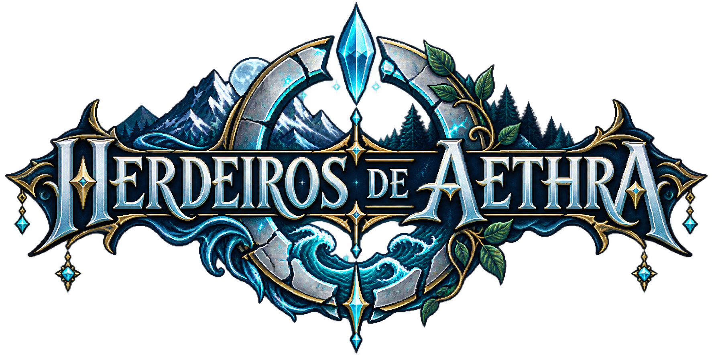

O mundo lembra. Você pode reescrevê-lo.
No computador: setas do teclado para mover · E para interagir (NPCs, baús, nós de coleta, masmorra)
· U mapa · K estado · I inventário · M/Q missões · F forja · G invocação · T habilidades · S salvar · P automático · F1 tutorial · Esc fechar janelas
Menus: setas movem o cursor · Enter ou Espaço confirma · Esc volta
No celular: use o direcional e o botão "E" que aparecem na tela.